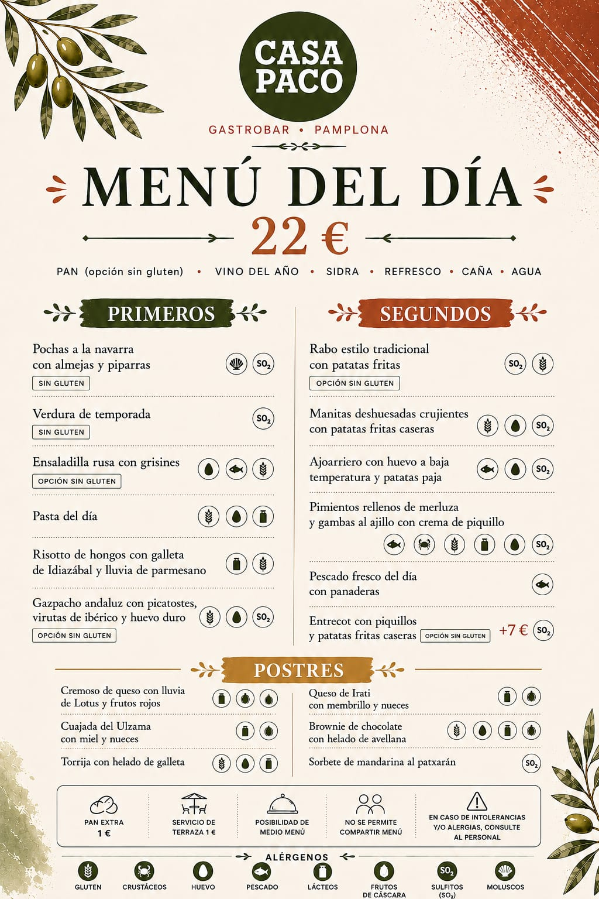
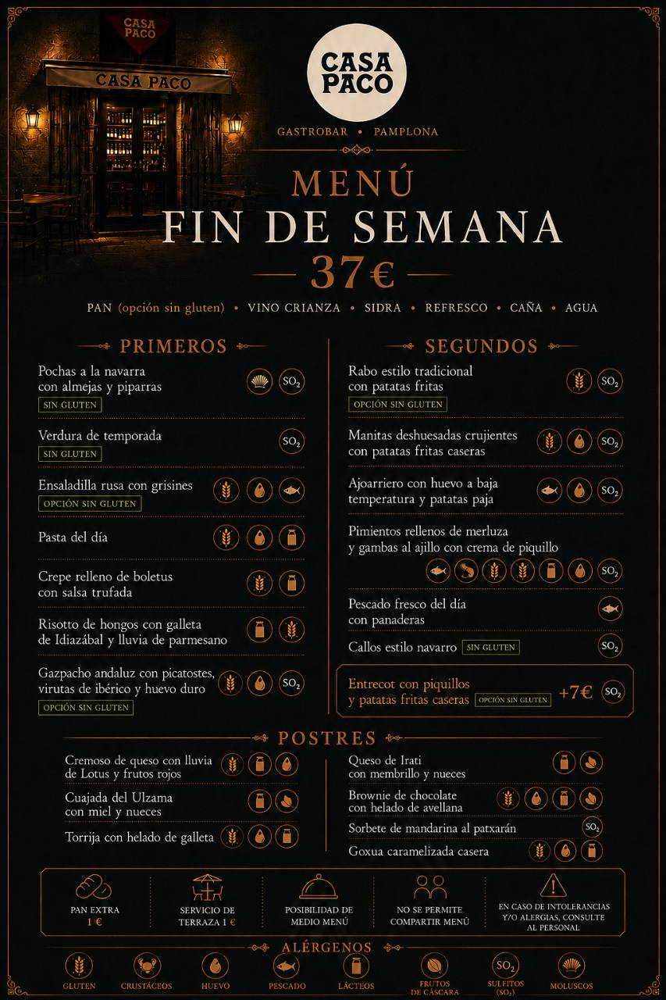

Pochas a la navarra con almejas y piparras
Guiso navarro suave y sabroso, con legumbre fina, toque marinero de almejas y el punto alegre de la piparra.
Sin gluten · Contiene moluscos y sulfitosCasa Paco · Gastrobar · Pamplona
Incluye pan, vino crianza, sidra, refresco, caña o agua.
Guiso navarro suave y sabroso, con legumbre fina, toque marinero de almejas y el punto alegre de la piparra.
Sin gluten · Contiene moluscos y sulfitosProducto fresco de temporada, cocinado con sencillez para mantener su sabor natural.
Sin gluten · Contiene sulfitosClásica ensaladilla cremosa, servida con grissines crujientes para acompañar.
Opción sin gluten · Contiene gluten, huevo y pescadoReceta diaria de pasta, pensada para un primer plato completo y reconfortante.
Contiene gluten, huevo y lácteosCrepe meloso con boletus y una salsa trufada aromática, cremosa y elegante.
Contiene gluten y lácteosArroz cremoso con hongos, intensidad de queso Idiazábal y parmesano rallado al momento.
Contiene lácteos y glutenGazpacho fresco con guarnición crujiente, ibérico y huevo para darle más cuerpo y sabor.
Opción sin gluten · Contiene gluten, huevo y sulfitosCarne cocinada lentamente hasta quedar tierna, con salsa tradicional y patatas fritas.
Opción sin gluten · Contiene gluten y sulfitosManitas trabajadas sin hueso, doradas por fuera y jugosas por dentro, con patatas caseras.
Contiene gluten, huevo y sulfitosReceta tradicional con bacalao, huevo cremoso y patata paja para aportar textura.
Contiene pescado, huevo y sulfitosPimientos suaves y cremosos, rellenos de merluza y gambas, terminados con salsa de piquillo.
Contiene pescado, crustáceos, gluten, huevo, lácteos y sulfitosSelección diaria de pescado fresco, acompañado de patatas panaderas.
Contiene pescadoPlato de cuchara con carácter, salsa ligada y sabor tradicional navarro.
Sin gluten · Contiene sulfitosCorte de carne a la plancha, servido con pimientos del piquillo y patatas fritas caseras.
Suplemento +7€ Opción sin gluten · Contiene sulfitosPostre cremoso y dulce, con galleta Lotus y el contraste fresco de los frutos rojos.
Contiene gluten, lácteos y huevoCuajada tradicional, suave y láctea, acompañada de miel y nueces.
Contiene lácteos y frutos de cáscaraTorrija jugosa con helado de galleta, un final goloso y muy reconocible.
Contiene gluten, huevo y lácteosQueso con personalidad, acompañado de dulce de membrillo y nueces.
Contiene lácteos y frutos de cáscaraBrownie intenso de chocolate con helado de avellana para rematar con textura y sabor.
Contiene gluten, huevo, lácteos y frutos de cáscaraSorbete fresco y digestivo con el toque navarro del patxarán.
Contiene sulfitosPostre tradicional cremoso, con bizcocho, nata, crema y caramelo tostado.
Contiene gluten, huevo y lácteosPan extra 1€. Servicio de terraza 1€. Posibilidad de medio menú. No se permite compartir menú.
En caso de intolerancias o alergias, consulte al personal antes de pedir.

